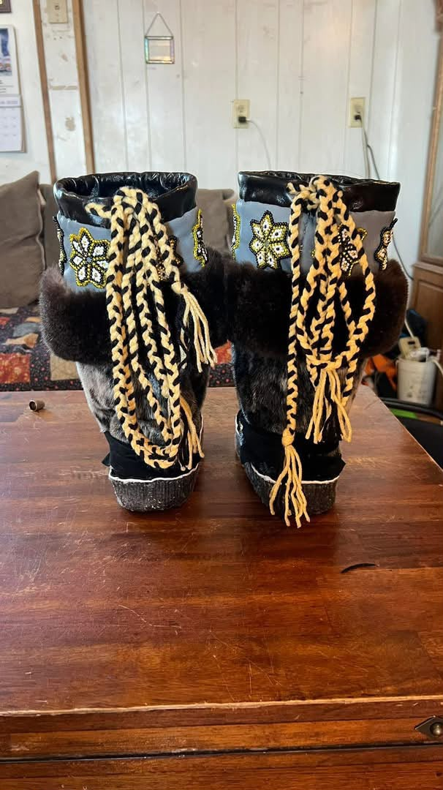
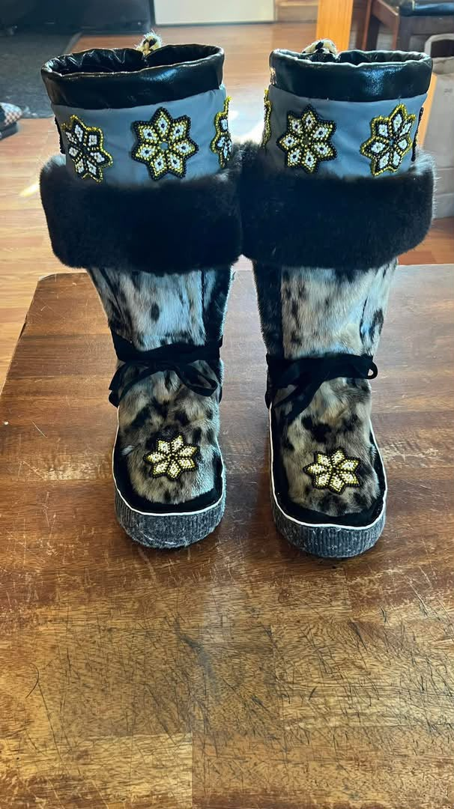

Choose
Materials are selected for their condition, character and intended use.
Crafted for cold country
Authentic mukluks, parkas, slippers and skinwork, carefully made in small batches with respect for the material and the stories carried in it.


Thoughtful work, made one piece at a time.
Every hide, stitch and bead is chosen with care.
Ask about fit, materials and custom work on WhatsApp.
The current collection
Each piece is photographed as it is made. Select a work to see the material notes, process and availability.
More than a product page
Good skinwork asks for patience. It is measuring, cutting, softening, stitching and checking the fit again. It is knowing when a material wants to be left alone—and when a small detail will make a piece feel like yours.
“The best work still carries the maker in it.”
See how the work comes together ↗Field notes
A growing journal about materials, memory, technique and the people who wear this work.
The work behind the work
These are not factory objects. They are considered pieces made for real weather, real movement and a long life.
Materials are selected for their condition, character and intended use.
Each hide is cleaned, softened and mapped before a single cut is made.
Patterns, hand-stitching, beadwork and finishing bring the piece together.
We talk through fit, care and the story of the finished piece before it travels.
Worn & remembered
Notes from people who have found a pair, commissioned a piece or simply carried the work forward.
The care in the stitching is something you can feel the moment you put them on.
Leave a note
Your name and message are enough. In the production version, reviews can be held for approval before they appear publicly.
Start a conversation
There is no checkout here. Tell us which piece caught your eye and we will answer questions about price, sizing, materials, shipping and custom work.
app.js before publishing.